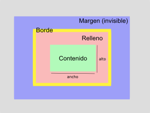

11 Diseño visual I
Diseño visual I
Las hojas de estilo suelen utilizarse también para realizar diseños vistosos de las páginas web. Para ello se utiliza el llamado modelo de cajas. Este modelo tiene su base en que cualquier elemento HTML (tabla, fila, párrafo, división,...) es en realidad una caja con la siguiente estructura:

Así, cada caja tiene un contenido (texto en el caso de un párrafo, el contenido de una celda, etc.), alrededor del cual hay un espacio de relleno (en inglés, padding). Alrededor del relleno hay un borde (border), que puede estar visible o no, y por último está el margen (margin), que es el espacio que se deja desde la caja a lo que le rodea. Estos parámetros se pueden controlar con las propiedades que aparecen aquí.
Normalmente se suele utilizar el modelo de cajas para estructurar adecuadamente los contenidos de una página web. Para ello se suelen utilizar las etiquetas <div> para dividir la página en secciones. A cada etiqueta <div> se le asigna un identificador para poder referirse a ella desde la hoja de estilos y así poder situarla en la página con sus características propias (color de fondo, bordes, tipos de letra, etc.).
De esta manera, la primera tarea a realizar será planificar la estructura de nuestra página. Suele ser una buena idea realizar un boceto para esta tarea. Un ejemplo de ello sería:

A partir del boceto, se realizaría la estructuración del código HTML de la página. Para ello se haremos uso de las etiquetas <div>, tal como hemos comentado antes. En el caso del ejemplo, el código HTML necesario sería el siguiente:
<!DOCTYPE html>
<html>
<head>
<title>Ejemplo de modelo visual</title>
</head>
<body>
<div id="contenedor">
<p>contenedor
<header>
<p>header</p>
</header>
<div id = "contenedor_izquierda">
<p>contenedor_izquierda</p>
<nav>
<p>nav</p>
<ul>
<li><a href="#">menú 1</a></li>
<li><a href="#">menú 2</a></li>
<li><a href="#">menú 3</a></li>
</ul>
</nav>
<div class="foto">
<p>div</p>
FOTO1
</div>
<div class="foto">
<p>div</p>
FOTO2
</div>
</div>
<main>
<p>main</p>
Aquí vendría el código del cuerpo
<br>Aquí vendría el código del cuerpo
<br>Aquí vendría el código del cuerpo
<br>Aquí vendría el código del cuerpo
<br>Aquí vendría el código del cuerpo
<br>Aquí vendría el código del cuerpo
<br>Aquí vendría el código del cuerpo
</main>
</div>
</body>
</html>
El código CSS que quedaría para nuestro ejemplo tendría un aspecto similar al siguiente:
* {margin:5px; padding:5;}
p {color:red;}
#contenedor {
background-color: rgb(123, 192, 192);
width:100%;
height: 350px;
}
header {
position:absolute;
left:15px;
width:98%;
height: 60px;
background-color:bisque;
text-align: center;
}
#contenedor_izquierda {
position: relative;
top:75px;
float:left;
width:20%;
background-color:rgb(205, 225, 243);
}
main {
position: relative;
top:75px;
float:right;
width:70%;
background-color:bisque;
}
nav {
width: 80%;
background-color:bisque;
}
nav li {list-style: none;}
.foto {
width: 80%;
background-color:bisque;
}
puedes probar el ejemplo aquí
Una vez realizada la estructuración del código, añadiríamos los contenidos a cada una de las secciones: párrafos, imágenes, listas, tablas, etc. Una vez completada nuestra página, pasaríamos a definir la hoja de estilos necesaria.
En la hoja de estilos se definiría el posicionamiento de cada una de las secciones. Para ello se hará uso del modelo de formato visual. En esta sección se encuentra el código CSS necesario para situar una caja dentro de la página web.
El elemento position permite definir el comportamiento de la caja en el documento. Los valores que puede tomar son:
- static. Valor por defecto de todos los elementos HTML. Los elementos estáticos aparecen en pantalla según el flujo normal de representación de HTML. Los elementos posicionados con Static no están afectados por las propiedades top, bottom, left y right.
- relative. La caja estará situada dentro del flujo del documento. Esto quiere decir que su posición vendrá marcada por los elementos HTML que tenga delante y detrás. Su posición se desplazará de forma relativa a la que tendría en ese flujo normal. Se podrá solapar con otros elementos pero el espacio que se le reservaba permanecerá en el flujo normal. Los elementos posicionados con Relative a menudo son usados como bloques contenedores de elementos posicionados con absolute.
- absolute. La posición de la caja vendrá dada por las coordenadas que se definan. Sin embargo, la caja no estará dentro del flujo del documento, por lo que se podrá solapar con otros elementos de la página. El resto de elementos se comportan como si los elementos posicionados de forma absoluta no existieran. El elemento padre del que se posiciona de forma absoluta debe estar posicionado aunque sea con relative.
- fixed. Este valor implica un posicionamiento absoluto (como el del apartado anterior) pero manteniendo la posición aunque se desplace la página. De esta manera, la caja estará siempre visible. Se suele utilizar para los índices de las páginas.
Es aconsejable hacer pruebas con los distintos tipos de posicionamiento para ver su comportamiento. Una vez determinado este valor, se puede definir la posición de las cajas en función de unas coordenadas. Dichas coordenadas hacen referencia al elemento padre o a la ventana del navegador, y son las siguientes:
- top. Distancia de la caja respecto al límite superior de su elemento contenedor.
- right. Distancia de la caja respecto al límite derecho de su elemento contenedor.
- bottom. Distancia de la caja respecto al límite inferior de su elemento contenedor.
- left. Distancia de la caja respecto al límite izquierdo de su elemento contenedor.
Normalmente se suele indicar las distancias en píxeles (px).
En el caso de que alguna caja se solape con otra, se puede determinar cuál estará delante utilizando el parámetro z-index. Este parámetro toma valores enteros positivos o negattivos(...,-1, 0, 1, 2, 3,...) y se asigna un valor para cada caja. La caja que tenga un valor mayor es la que aparecerá por delante de las demás.
Por último, también se suele indicar la anchura (width) y la altura (height) de las cajas mediante los parámetros que se pueden encontrar en los detalles del modelo de formato visual.
Manual de CSS